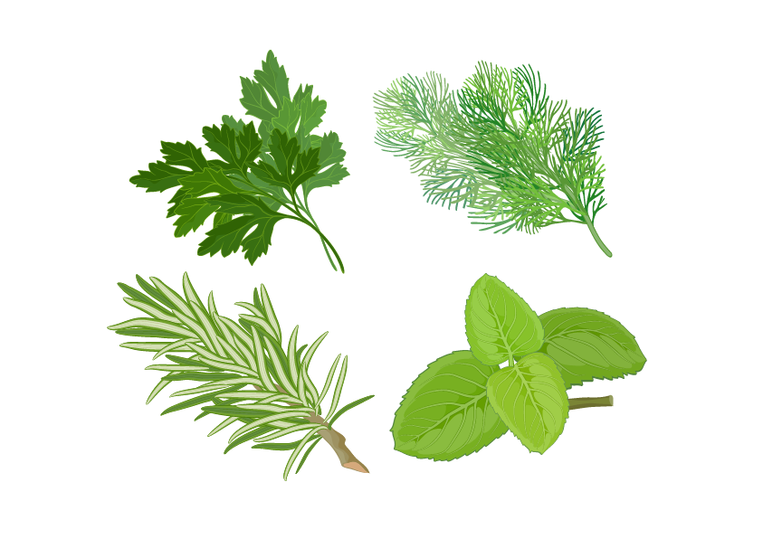

Duvidas? Entre em contato!

Muita gente desconhece essa planta, mas ela é uma das mais importantes e benéficas que existem no universo das ervas medicinais. Isso porque ela tem inúmeras propriedades terapêuticas, possuindo ação anti-inflamatória, diurética e também digestiva. De acordo com o terapeuta holístico Jayme Siqueira, ela é rica em minerais fundamentais para o nosso organismo: "A cavalinha é muito anterior à existência do homem e, por isso, tem toda uma memória celular e uma série de minerais que são essenciais para a gente", explica. Uma boa dica é preparar chás a partir da cavalinha e das folhas de bambu (um desdobramento da cavalinha), que se tornam bebidas desintoxicantes e fortalecedoras do sistema imunológico.
2. Oliveira garante longevidade
Outra planta que merece destaque é a oliveira, pois é rica em antioxidantes, funciona como anti-inflamatório e ajuda no tratamento de problemas de pele. Segundo o terapeuta, ela é uma planta que garante uma maior conservação do nosso corpo: "No universo das plantas milenares, a oliveira é uma das que mais se destaca. Na alimentação mediterrânea, por exemplo, a oliva é considerada um alimento muito importante, pois ajuda na digestão e garante longevidade para as pessoas", comenta o profissional.
3. Babosa tem poder curadorA babosa, também conhecida como aloe vera, é mais uma planta que merece destaque nessa lista. Isso porque os benefícios que ela traz são inúmeros: dentro de suas folhas, ela possui um gel "milagroso" que pode ser usado para tratar queimaduras, cicatrizes, picadas de insetos e até mesmo atua como anti-inflamatório natural. O suco do gel da babosa também é um alimento usado para desintoxicar e auxiliar na digestão.
4. Mulungu combate estresse, depressão e ansiedadeSe você nunca ouviu falar no mulungu, chegou a hora de conhecer uma das plantinhas mais curadoras que existem. Ela se destaca por suas propriedades calmantes, antidepressivas, diuréticas e anti-inflamatórias. De acordo com o Jayme, essa é uma das plantas medicinais mais importantes: "Para quem tem dor de cabeça, problema para dormir ou sofre com ansiedade, eu recomendo o mulungu. Essa planta é uma importante hepatoprotetora, porque atua fazendo uma desintoxicação do fígado e garante uma maior tranquilidade à nossa mente. É sempre muito bom tomar o mulungu, porque ele relaxa, ameniza a ansiedade, alivia o estresse, é antidepressivo... traz realmente muitos benefícios", explica o terapeuta.
5.Camomilatem propriedades calmantes e digestivasEssa é uma das plantas mais conhecidas e, pelo menos uma vez na vida, é provável que você já tenha tomado um chá de camomila. Essa erva é conhecida pelo seu poder calmante e suas propriedades digestivas. Além disso, ela ajuda a amenizar o enjoo e a cólica menstrual, trazendo mais conforto para o nosso organismo.